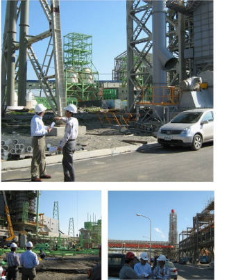
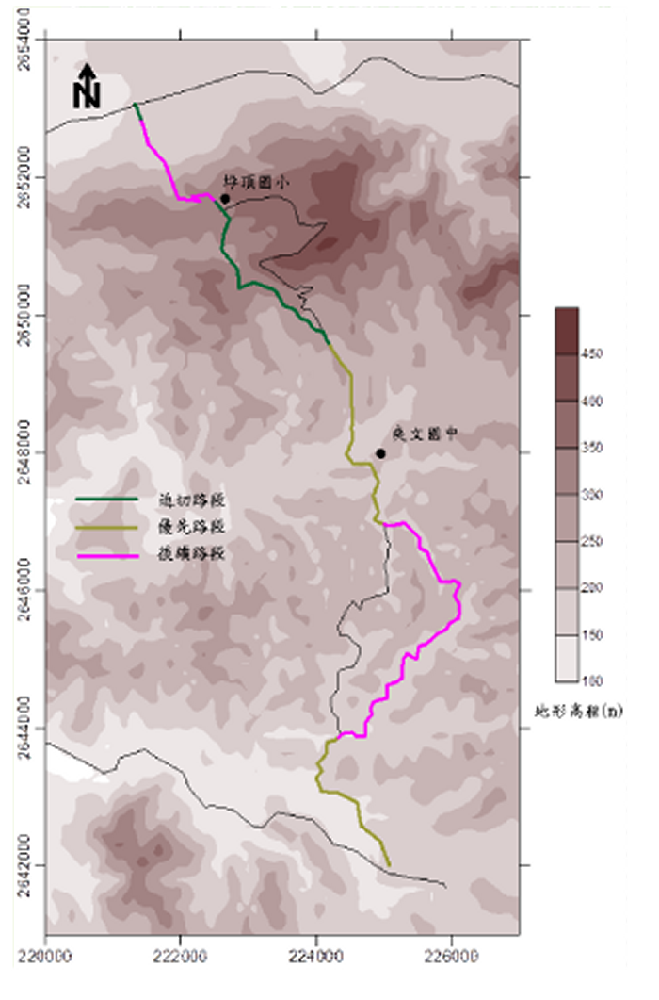

空氣品質模式模擬在環境空氣品質分析及管理上扮演非常重要的角色。空氣品質模式模擬的主要工作在模擬污染物從排放源排出後，經過大氣的傳輸、擴散、轉化及沈降等過程後，到達我們生活環境時的濃度。因此，空品模式模擬可用於針對既有環境污染來源的解析及政策管制成果的分析，例如，應用於各縣市空氣品質改善計畫；也可用於模擬尚未設置的新增或變更污染源的可能影響，例如，應用於污染源設置及操作許可評估及開發計畫環境影響評估等。
景丰公司在空氣品質模式上有多年的工作經驗，對空氣品質模式模擬領域的理論與應用均有相當專業且豐富的知識與能力。不論是評估直接排放的原生性污染物為主的高斯擴散模式(如ISCST3)，或是以大氣中生成或轉化的衍生性污染物為主的三維網格模式(如TAQM)，均有多年實際執行經驗，且相當多的工作實績。
景丰公司在空氣品質模式上有多年的工作經驗，對空氣品質模式模擬領域的理論與應用均有相當專業且豐富的知識與能力。不論是評估直接排放的原生性污染物為主的高斯擴散模式(如ISCST3)，或是以大氣中生成或轉化的衍生性污染物為主的三維網格模式(如TAQM)，均有多年實際執行經驗，且相當多的工作實績。
|
|
- 台中縣中龍鋼鐵許可之空氣污染物增量高斯擴散模擬
|  | 本計畫對中龍公司二期一階固定污染源許可申請中有關空氣污染物濃度增量進行模擬分析工作。本次工作包括原生性空氣污染物(TSP, SO2, NO2)擴散模擬，及衍生性空氣污染物(O3, PM10)擴散模擬。透過現場實際勘查以瞭解工廠實際狀況，並在取得工廠排放量規劃後，隨即進行空氣污染物濃度增量模擬。初次模擬結果經與業者討論，並對可能影響較大排放源提出改善建議，最後再進行定案模擬，及提送模擬結果報告。
※ 依據現場實際勘查，研判每根煙囪之影響建築物，並設定建築物之位置及尺寸。 |
- 桃園縣台電大潭NOx變更環差之空氣污染物擴散模擬
 |
本計畫主要針對原環評報告中有關氮氧化物排放濃度之內容修正的影響評估。探討本案變更前後機組所排放之氮氧化物對空氣品質的影響，從起停機階段之排放率、濃度的比較，使用¬高斯擴散模式（ISCST 3）及網格模式（TAQM）來探討原生性污染物（NO2）及衍生性污染物（O3）變更前後之影響，進而分析評估本變更可能之影響程度。 |
- 投17線0K+640~21K+000（草屯~中寮）道路拓寬改善工程EIS-施工階段空氣品質模式模擬評估
|  | 南投縣投17線鄉道橫跨南投縣草屯鎮與中寮鄉。既有投17線全長約19公里，大部分路段線形不符規範標準且有效路基過窄，故本計畫預計沿既有路廊將有效路基拓寬為12m，並局部修正線形使其符合規範要求；部分線形極差且地形或環境不允許拓寛的路段，則另闢新路。本計畫為道路寬改善工程，且施工時採分期分區開發，主要評估對象為施工期間的塵土逸散、車行揚塵及施工機具的排放對空氣品質的影響。
※ 依據現場實際勘查，研判每根煙囪之影響建築物，並設定建築物之位置及尺寸。 |